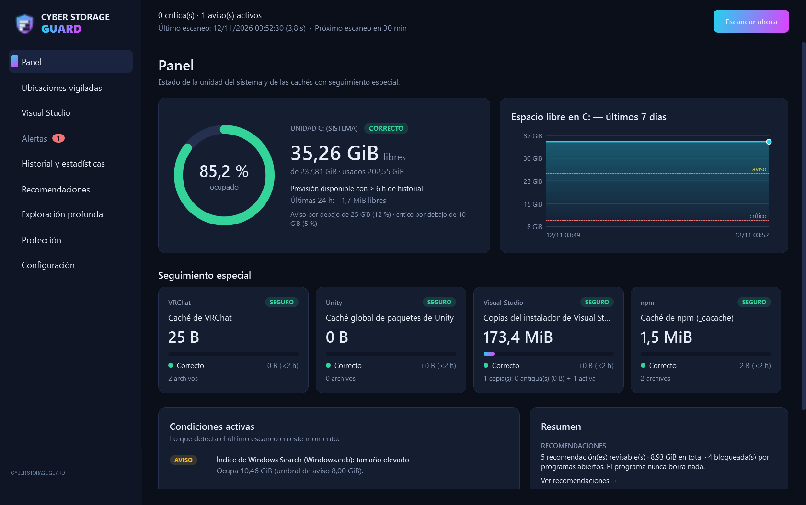

◉
Disk status
Check used and free space and warning or critical status at a glance.
Find out what takes up disk space, identify growth trends, and protect your projects. A preventive approach to monitoring Windows storage, without automatic cleanup.
Freeware · Windows 10/11 · Closed source · Currently in testing

CYBER STORAGE GUARD is designed to identify warning signs, provide useful information, and help you make informed decisions without putting your files at risk.
Check used and free space and warning or critical status at a glance.
Review scan history to understand how disk usage changes over time.
Identify situations requiring attention and mark alerts as reviewed.
Inspect common development and gaming locations, including Unity and Visual Studio.
Get explanations and suggestions that respect sensitive locations. You stay in control.
Identify protected paths and avoid unsafe suggestions involving important projects and data.
CYBER STORAGE GUARD helps you understand PC storage. It does not promise automatic cleanup or replace backups.
Check available space, monitored locations, and overall drive status.
Dashboard and locationsReview alerts, history, and exploration results to find areas worth investigating.
History and analysisRead recommendations and check protected paths before taking any action outside the tool.
Recommendations and protectionScreenshots from a test build. Choose a category, search for a feature, or enlarge an image.
Showing 9 of 9 screens
The overview of your storage. Check drive C: capacity, free space, and monitoring status. The dashboard brings together key indicators for a quick assessment.
Where space is being used. Review the folders and locations monitored by the tool, their measured size, and how they change over time. Long paths can be copied for closer inspection.
A closer look at development tools. A dedicated section for Visual Studio components and background downloads, to understand their impact without automatically changing system tasks.
Important warnings in one place. Review storage alerts and detected issues, and track what needs attention.
Understand changes over time. Explore scan records and disk usage trends.
Suggestions with care. Review explanations and safety warnings before deciding whether to take action.
Explore folders in greater detail. Inspect filesystem locations subject to Windows permissions, with partial measurements clearly indicated.
Your projects are not junk. Identify protected paths and see which locations need special care when working with Unity and other development projects.
Control how monitoring works. Adjust monitoring preferences and the app data location. If the data folder becomes unavailable, it is not silently moved to C:.
These images come from project testing. They must be reviewed for personal data and local paths before public launch.
An accidental click should never wipe out an important project. The tool is designed to observe, explain, and warn, without automatic cleanup.
These features describe the documented development status; the public release must pass additional testing.
The tool informs and protects. Decisions about your files remain yours.
This preview requires no accounts, forms, or external connections. Screenshots and assets are bundled locally. Privacy practices of the public app must be verified before release.
We distinguish project versions from planned future features. No public build is available yet.
Initial version preserved and verified as a baseline.
Improvements to data location, fault tolerance, and log size limits.
Ten robustness fixes. The report records 193 passing tests; extended validation is still pending.
Futuras ideas en estudio: visualización de uso del disco, detección de crecimiento anómalo y perfiles especializados. No se presentan como funciones ya disponibles.
Short answers about the planned release.
Yes. Freeware distribution for Windows is planned.
No. The plan is to distribute compiled software while keeping the source code private.
El diseño actual se basa en vigilancia, análisis y recomendaciones; no realiza limpiezas automáticas. Cualquier futura función de limpieza requeriría un diseño y autorización explícitos.
Not yet. The application is still being tested; downloads will be enabled only after a public build has been validated.
It is being developed for Windows 10 and 11. Compatibility on different machines must be validated before release.
This website works offline: extract the ZIP and open index.html. It uses no external libraries or images.
We are refining stability, compatibility, and safety before offering a public download. No premature links or unverified installers.
Contact Diegodc59 directly about bugs, installation problems or questions concerning CYBER STORAGE GUARD.
Developer's contact username
diegodc5Report bugs or share technical details. Please do not send passwords or sensitive information.
elgitanito46@gmail.comCyber Club is the developer's community. Support is provided through his personal account, not a public server. Discord direct messages may be restricted by privacy settings.